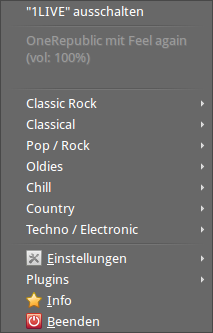
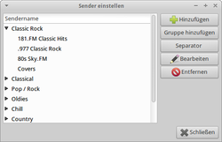
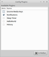
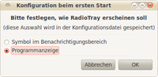

Radio Tray
Dieser Artikel wurde für die folgenden Ubuntu-Versionen getestet:
Ubuntu 16.04 Xenial Xerus
Ubuntu 14.04 Trusty Tahr
Zum Verständnis dieses Artikels sind folgende Seiten hilfreich:
Radio Tray  ist ein minimalistisches, einfach zu bedienendes Programm, mit dem ausschließlich Internetradiosender abgespielt werden können. Das Programm, welches auf die GStreamer-Bibliotheken zurückgreift, spielt die meisten Streaming-Formate ab. Dazu zählen Wiedergabelisten in den Formaten PLS, M3U, ASX, WAX und WVX.
ist ein minimalistisches, einfach zu bedienendes Programm, mit dem ausschließlich Internetradiosender abgespielt werden können. Das Programm, welches auf die GStreamer-Bibliotheken zurückgreift, spielt die meisten Streaming-Formate ab. Dazu zählen Wiedergabelisten in den Formaten PLS, M3U, ASX, WAX und WVX.
Unter KDE bieten sich als Alternative zu Radio Tray das Plasmoid StreamPlayer oder KRadio4 (ab Ubuntu 11.04 in den Paketquellen enthalten) an. Auch andere AudioPlayer können – neben lokal gespeicherter Musik – Internetradio wiedergeben.
Installation¶
Radio Tray ist in den offiziellen Paketquellen enthalten und wird über das folgende Paket installiert [1]:
|  |
| Senderauswahl |
radiotray (universe)
python-xdg (universe)
 mit apturl
mit apturl
Paketliste zum Kopieren:
sudo apt-get install radiotray python-xdg
sudo aptitude install radiotray python-xdg
Man findet das Programm anschließend im Menü unter "Multimedia -> Radio Tray".
Bedienung¶
Nach dem Programmstart findet man in der Systemleiste (Panel) ein zusätzliches Programmsymbol . Ab Version 0.6.3 wird das mit Ubuntu 10.04 neu eingeführte Indikator-Applet automatisch unterstützt. Das Programm wird über die Maustasten gesteuert. Die Liste der Radiosender kann mit einem  -Klick auf das Programmsymbol eingeblendet und darüber ausgewählt werden. Hier ist auch ein Eintrag zum Beenden der Wiedergabe vorhanden.
-Klick auf das Programmsymbol eingeblendet und darüber ausgewählt werden. Hier ist auch ein Eintrag zum Beenden der Wiedergabe vorhanden.
Einstellungen¶
|  |
| Einstellungsmenü |
Beim ersten Programmstart sind je nach Ubuntu-Version nur wenige (oder keine) Radiosender vorhanden. Diese kann man aber einfach selbst hinzufügen. Mit einem bzw. ↓ können die Listeneinträge sortiert werden. Die Daten werden im Homeverzeichnis unter ~/.local/share/radiotray/bookmarks.xml abgelegt und können auch in einem Editor bearbeitet werden [3].
Listen¶
Seiten wie z.B. MyOggRadio  stellen Listen von Webradio-Adressen als RadioTray-Bookmarks zur Verfügung. Die heruntergeladenen Dateien nach bookmarks.xml umbenennen und in den Ordner ~/.local/share/radiotray/ kopieren.
stellen Listen von Webradio-Adressen als RadioTray-Bookmarks zur Verfügung. Die heruntergeladenen Dateien nach bookmarks.xml umbenennen und in den Ordner ~/.local/share/radiotray/ kopieren.
bookmarks.xml für RadioTray - weitere Liste im Forum

Über "Lesezeichen neu laden" wird die Wiedergabeliste aktualisiert. Außerdem gibt es eine "Schlummerfunktion". So beendet sich die Wiedergabe des aktuellen Streams nach einer vorgegebenen Zeit.
Beispiele bookmarks.xml¶
Neun ausgewählte Sender in einer Liste:
1 2 3 4 5 6 7 8 | <bookmarks> <bookmark name="1LIVE" url="http://www.wdr.de/wdrlive/media/einslive.m3u"/> <bookmark name="News 89.4" url="http://edge.live.mp3.mdn.newmedia.nacamar.net/ps-news894/livestream.mp3"/> <bookmark name="Rock Antenne" url="http://www.rockantenne.de/webradio/rockantenne.m3u"/> <bookmark name="SWR3" url="http://mp3-live.swr3.de/swr3_m.m3u"/> <bookmark name="WDR2" url="http://www.wdr.de/wdrlive/media/wdr2.m3u"/> <bookmark name="WDR5" url="http://www.wdr.de/wdrlive/media/wdr5.m3u"/> </bookmarks> |
Sender nach Kategorie sortiert - in diesem Beispiel nach Ländern:
1 2 3 4 5 6 7 8 9 10 11 12 13 14 15 16 17 18 19 20 21 22 23 24 25 26 27 28 29 30 31 32 33 34 35 36 37 38 39 40 41 42 43 44 45 46 47 48 49 50 51 52 53 54 55 56 57 58 59 60 61 62 63 64 65 66 67 68 69 70 71 72 73 74 75 76 77 78 79 80 81 82 83 84 85 86 87 88 89 90 91 92 93 94 95 96 97 98 99 100 101 102 103 104 105 106 107 108 109 110 111 112 113 114 115 116 117 118 119 120 121 122 123 124 125 126 127 128 129 130 131 132 133 134 135 136 137 138 139 140 141 142 143 144 145 146 147 148 149 150 151 152 153 154 155 156 157 158 159 160 161 162 163 164 165 166 167 168 169 170 171 172 173 174 175 176 177 178 179 180 181 182 183 184 185 186 187 188 189 190 191 192 193 194 195 196 197 198 199 200 201 202 203 204 205 206 207 208 209 210 211 212 213 214 | <bookmarks> <group name="root"> <group name="Deutschland"> <group name="Baden-Württemberg"> <bookmark name="DASDING Livestream" url="http://mp3-live.dasding.de/dasding_m.m3u"/> <bookmark name="DASDING Lautstark" url="http://mp3-live.dasding.de/dasdingraka01_m.m3u"/> <bookmark name="DASDING Plattenleger" url="http://mp3-live.dasding.de/dasdingraka03_m.m3u"/> <bookmark name="DASDING Sprechstunde" url="http://mp3-live.dasding.de/dasdingraka02_m.m3u"/> <bookmark name="SWR1" url="http://mp3-live.swr.de/swr1bw_s.m3u"/> <bookmark name="SWR2" url="http://mp3-live.swr.de/swr2_s.m3u"/> <bookmark name="SWR3" url="http://mp3-live.swr3.de/swr3_m.m3u"/> </group> <group name="Bayern"> <bookmark name="80er Kulthits - Antenne Bayern" url="http://mp3channels.webradio.antenne.de/80er-kulthits"/> <bookmark name="90er-Hits Antenne Bayern" url="http://mp3channels.webradio.antenne.de/90er-hits"/> <bookmark name="B5 Aktuell" url="http://streams.br.de/b5aktuell_2.m3u"/> <bookmark name="B5 Plus" url="http://streams.br.de/b5plus_2.m3u"/> <bookmark name="Bayern 1" url="http://streams.br.de/bayern1muc_2.m3u"/> <bookmark name="Bayern 2 Nord" url="http://streams.br.de/bayern2nord_2.m3u"/> <bookmark name="Bayern 2 Sued" url="http://streams.br.de/bayern2sued_2.m3u"/> <bookmark name="Bayern 3" url="http://streams.br.de/bayern3_2.m3u"/> <bookmark name="Bayern Plus" url="http://streams.br.de/bayernplus_2.m3u"/> <bookmark name="Black Beatz - Antenne Bayern" url="http://mp3channels.webradio.antenne.de/black-beatz"/> <bookmark name="BR Heimat" url="http://streams.br.de/brheimat_2.m3u"/> <bookmark name="BR-Klassik" url="http://streams.br.de/br-klassik_2.m3u"/> <bookmark name="Chillout - Antenne Bayern" url="http://mp3channels.webradio.antenne.de/chillout"/> <bookmark name="Hits für Kids - Antenne Bayern" url="http://mp3channels.webradio.antenne.de/hits-fuer-kids"/> <bookmark name="Lovesongs - Antenne Bayern" url="http://mp3channels.webradio.antenne.de/lovesongs"/> <bookmark name="New Hits - Antenne Bayern" url="http://mp3channels.webradio.antenne.de/new-hits"/> <bookmark name="Oldies but goldies - Antenne Bayern" url="http://mp3channels.webradio.antenne.de/oldies-but-goldies "/> <bookmark name="Puls" url="http://streams.br.de/puls_2.m3u"/> </group> <group name="Berlin-Brandenburg"> <bookmark name="Antenne Brandenburg" url="http://www.antennebrandenburg.de/live.m3u"/> <bookmark name="Fritz! rbb" url="http://www.fritz.de/live.m3u"/> <bookmark name="Inforadio rbb" url="http://inforadio.de/live.m3u"/> <bookmark name="Kulturradio rbb" url="http://kulturradio.de/live.m3u"/> <bookmark name="Radio Berlin" url="http://radioberlin.de/live.m3u"/> <bookmark name="Radio Eins rbb" url="http://radioeins.de/live.m3u"/> </group> <group name="Bremen"> <bookmark name="Nordwestradio" url="http://httpmedia.radiobremen.de/nordwestradio.m3u"/> <bookmark name="Bremen Eins" url="http://rb-mp3-m-bremeneins.akacast.akamaistream.net/7/716/234436/v1/gnl.akacast.akamaistream.net/rb-mp3-m-bremeneins"/> <bookmark name="Bremen Vier" url="http://dl-ondemand.radiobremen.de/bremenvier.m3u"/> <bookmark name="Bremen Next" url="http://dl-ondemand.radiobremen.de/bremen_next.m3u"/> </group> <group name="Hamburg"> <bookmark name="Radio Hamburg" url="http://stream.radiohamburg.de/rhh-live/mp3-192/linkradiohamburgde"/> </group> <group name="Hessen"> <bookmark name="HR1" url="http://metafiles.gl-systemhaus.de/hr/hr1_2.m3u"/> <bookmark name="HR2" url="http://metafiles.gl-systemhaus.de/hr/hr2_2.m3u"/> <bookmark name="HR3" url="http://metafiles.gl-systemhaus.de/hr/hr3_2.m3u"/> <bookmark name="HR4" url="http://metafiles.gl-systemhaus.de/hr/hr4_2.m3u"/> <bookmark name="hr-iNFO" url="http://www.metafilegenerator.de/HR/hrinfo/mp3/webm.m3u"/> <bookmark name="YOU FM" url="http://metafiles.gl-systemhaus.de/hr/youfm_2.m3u"/> <bookmark name="YOU FM Club-Stream" url="http://metafiles.gl-systemhaus.de/hr/youfm_club.m3u"/> <bookmark name="YOU FM-Sounds-Stream" url="http://metafiles.gl-systemhaus.de/hr/youfm_sounds.m3u"/> <bookmark name="YOU FM Just Music-Stream" url="http://metafiles.gl-systemhaus.de/hr/youfm_justmusic.m3u"/> </group> <group name="Mecklenburg-Vorpommern"> <bookmark name="foo" url="bar"/> </group> <group name="Niedersachsen"> <bookmark name="NDR1" url="http://www.ndr.de/resources/metadaten/audio/m3u/ndr1niedersachsen.m3u"/> <bookmark name="NDR2" url="http://www.ndr.de/resources/metadaten/audio/m3u/ndr2.m3u"/> <bookmark name="NDR Info" url="http://www.ndr.de/resources/metadaten/audio/m3u/ndrinfo.m3u"/> <bookmark name="NDR Info Spezial" url="http://www.ndr.de/resources/metadaten/audio/m3u/ndrinfo_spezial.m3u"/> <bookmark name="NDR Kultur" url="http://www.ndr.de/resources/metadaten/audio/m3u/ndrkultur.m3u"/> <bookmark name="N-JOY" url="http://www.ndr.de/resources/metadaten/audio/m3u/n-joy.m3u"/> <bookmark name="N-JOY Abstrait" url="http://www.ndr.de/resources/metadaten/audio/m3u/ndrloop25.m3u"/> <bookmark name="N-JOY Flavor Mix" url="http://www.ndr.de/resources/metadaten/audio/m3u/ndrloop7.m3u"/> <bookmark name="N-JOY In the Mix" url="http://www.ndr.de/resources/metadaten/audio/m3u/ndrloop28.m3u"/> <bookmark name="N-JOY Morningshow" url="http://www.ndr.de/resources/metadaten/audio/m3u/ndrloop27.m3u"/> <bookmark name="N-JOY Pop" url="http://www.ndr.de/resources/metadaten/audio/m3u/ndrloop29.m3u"/> <bookmark name="N-JOY Soundfiles Alternative" url="http://www.ndr.de/resources/metadaten/audio/m3u/ndrloop5.m3u"/> <bookmark name="N-JOY Soundfiles HipHop" url="http://www.ndr.de/resources/metadaten/audio/m3u/ndrloop6.m3u"/> </group> <group name="Nordrhein-Westfalen"> <bookmark name="1LIVE" url="http://www.wdr.de/wdrlive/media/einslive.m3u"/> <bookmark name="1LIVE diggi" url="http://www.wdr.de/wdrlive/media/einslivedigi.m3u"/> <bookmark name="1LIVE Fiehe" url="http://www.wdr.de/wdrlive/media/1live_fiehe.m3u"/> <bookmark name="1LIVE Kassettendeck" url="http://www.wdr.de/wdrlive/media/1live_kassettendeck.m3u"/> <bookmark name="1LIVE Klubbing" url="http://www.wdr.de/wdrlive/media/1live_klubbing.m3u"/> <bookmark name="1LIVE Plan B" url="http://www.wdr.de/wdrlive/media/1live_planb.m3u"/> <bookmark name="1LIVE Rocker" url="http://www.wdr.de/wdrlive/media/1live_rocker.m3u"/> <bookmark name="Funkhaus Europa" url="http://www.wdr.de/wdrlive/media/mp3/funkhaus-europa.m3u"/> <bookmark name="KiRaKa" url="http://www.wdr.de/wdrlive/media/kiraka.m3u"/> <bookmark name="News 89.4" url="http://edge.live.mp3.mdn.newmedia.nacamar.net/ps-news894/livestream.mp3"/> <bookmark name="WDR2" url="http://www.wdr.de/wdrlive/media/wdr2.m3u"/> <bookmark name="WDR3" url="http://www.wdr.de/wdrlive/media/wdr3.m3u"/> <bookmark name="WDR4" url="http://www.wdr.de/wdrlive/media/wdr4.m3u"/> <bookmark name="WDR5" url="http://www.wdr.de/wdrlive/media/wdr5.m3u"/> </group> <group name="Rheinland-Pfalz"> <bookmark name="SWR1" url="http://mp3-live.swr.de/swr1bw_s.m3u"/> <bookmark name="SWR2" url="http://mp3-live.swr.de/swr2_s.m3u"/> <bookmark name="SWR3" url="http://mp3-live.swr3.de/swr3_m.m3u"/> </group> <group name="Saarland"> <bookmark name="Antenne Saar" url="http://streaming01.sr-online.de/antennesaar_2.m3u"/> <bookmark name="SR1" url="http://streaming01.sr-online.de/sr1_2.m3u"/> <bookmark name="SR2" url="http://streaming01.sr-online.de/sr2_2.m3u"/> <bookmark name="SR3" url="http://streaming01.sr-online.de/sr3_2.m3u"/> <bookmark name="Unser Ding" url="http://gffstream.ic.llnwd.net/stream/gffstream_mp3_w62a"/> </group> <group name="Sachsen"> <bookmark name="MDR1" url="http://avw.mdr.de/livestreams/mdr1_radio_sachsen_live_128.m3u"/> <bookmark name="MDR Figaro" url="http://avw.mdr.de/livestreams/mdr_figaro_live_128.m3u"/> <bookmark name="MDR Figaro Classic" url="http://avw.mdr.de/livestreams/mdr_figaro_classic_128.m3u"/> <bookmark name="MDR FIGARO Figarino" url="http://avw.mdr.de/livestreams/mdr_figaro_figarino_128.m3u"/> <bookmark name="MDR INFO Livestream" url="http://avw.mdr.de/livestreams/mdr_info_live_128.m3u"/> <bookmark name="MDR Klassik" url="http://avw.mdr.de/livestreams/mdr_klassik_live_128.m3u"/> <bookmark name="MDR Jump Radio" url="http://www.jumpradio.de/static/webchannel/jump_live_channel_high.m3u"/> <bookmark name="MDR Jump Radio Rock Channel" url="http://www.jumpradio.de/static/webchannel/jump_rock_channel_128.m3u"/> <bookmark name="MDR Jump Radio Trend Channel" url="http://www.jumpradio.de/static/webchannel/jump_trend_channel_128.m3u"/> <bookmark name="MDR Jump Radio In The Mix" url="http://c22033-l.i.core.cdn.streamfarm.net/22033mdr/live/3087mdr_jump/ch_inthemix_128.mp3"/> <bookmark name="MDR Sputnik" url="http://www.sputnik.de/m3u/live.hi.m3u"/> <bookmark name="MDR Sputnik Black-Channel" url="http://www.sputnik.de/m3u/black.hi.m3u"/> <bookmark name="MDR Sputnik Rock-Channel" url="http://www.sputnik.de/m3u/rock.hi.m3u"/> <bookmark name="MDR Sputnik Insomnia-Channel" url="http://www.sputnik.de/m3u/insomnia.hi.m3u"/> <bookmark name="MDR Sputnik Popkult-Channel" url="http://www.sputnik.de/m3u/popkult.hi.m3u"/> <bookmark name="MDR Sputnik Soundcheck-Channel" url="http://www.sputnik.de/m3u/soundcheck.hi.m3u"/> </group> <group name="Sachsen-Anhalt"> <bookmark name="MDR" url="http://avw.mdr.de/livestreams/mdr_sachsen-anhalt_live_128.m3u"/> <bookmark name="MDR Figaro" url="http://avw.mdr.de/livestreams/mdr_figaro_live_128.m3u"/> <bookmark name="MDR Figaro Classic" url="http://avw.mdr.de/livestreams/mdr_figaro_classic_128.m3u"/> <bookmark name="MDR FIGARO Figarino" url="http://avw.mdr.de/livestreams/mdr_figaro_figarino_128.m3u"/> <bookmark name="MDR INFO Livestream" url="http://avw.mdr.de/livestreams/mdr_info_live_128.m3u"/> <bookmark name="MDR Klassik" url="http://avw.mdr.de/livestreams/mdr_klassik_live_128.m3u"/> <bookmark name="MDR Jump Radio" url="http://www.jumpradio.de/static/webchannel/jump_live_channel_high.m3u"/> <bookmark name="MDR Jump Radio Rock Channel" url="http://www.jumpradio.de/static/webchannel/jump_rock_channel_128.m3u"/> <bookmark name="MDR Jump Radio Trend Channel" url="http://www.jumpradio.de/static/webchannel/jump_trend_channel_128.m3u"/> <bookmark name="MDR Jump Radio In The Mix" url="http://c22033-l.i.core.cdn.streamfarm.net/22033mdr/live/3087mdr_jump/ch_inthemix_128.mp3"/> <bookmark name="MDR Sputnik" url="http://www.sputnik.de/m3u/live.hi.m3u"/> <bookmark name="MDR Sputnik Black-Channel" url="http://www.sputnik.de/m3u/black.hi.m3u"/> <bookmark name="MDR Sputnik Rock-Channel" url="http://www.sputnik.de/m3u/rock.hi.m3u"/> <bookmark name="MDR Sputnik Insomnia-Channel" url="http://www.sputnik.de/m3u/insomnia.hi.m3u"/> <bookmark name="MDR Sputnik Popkult-Channel" url="http://www.sputnik.de/m3u/popkult.hi.m3u"/> <bookmark name="MDR Sputnik Soundcheck-Channel" url="http://www.sputnik.de/m3u/soundcheck.hi.m3u"/> </group> <group name="Thüringen"> <bookmark name="MDR" url="http://avw.mdr.de/livestreams/mdr_thueringen_live_128.m3u"/> <bookmark name="MDR Figaro" url="http://avw.mdr.de/livestreams/mdr_figaro_live_128.m3u"/> <bookmark name="MDR Figaro Classic" url="http://avw.mdr.de/livestreams/mdr_figaro_classic_128.m3u"/> <bookmark name="MDR FIGARO Figarino" url="http://avw.mdr.de/livestreams/mdr_figaro_figarino_128.m3u"/> <bookmark name="MDR INFO Livestream" url="http://avw.mdr.de/livestreams/mdr_info_live_128.m3u"/> <bookmark name="MDR Klassik" url="http://avw.mdr.de/livestreams/mdr_klassik_live_128.m3u"/> <bookmark name="MDR Jump Radio" url="http://www.jumpradio.de/static/webchannel/jump_live_channel_high.m3u"/> <bookmark name="MDR Jump Radio Rock Channel" url="http://www.jumpradio.de/static/webchannel/jump_rock_channel_128.m3u"/> <bookmark name="MDR Jump Radio Trend Channel" url="http://www.jumpradio.de/static/webchannel/jump_trend_channel_128.m3u"/> <bookmark name="MDR Jump Radio In The Mix" url="http://c22033-l.i.core.cdn.streamfarm.net/22033mdr/live/3087mdr_jump/ch_inthemix_128.mp3"/> <bookmark name="MDR Sputnik" url="http://www.sputnik.de/m3u/live.hi.m3u"/> <bookmark name="MDR Sputnik Black-Channel" url="http://www.sputnik.de/m3u/black.hi.m3u"/> <bookmark name="MDR Sputnik Rock-Channel" url="http://www.sputnik.de/m3u/rock.hi.m3u"/> <bookmark name="MDR Sputnik Insomnia-Channel" url="http://www.sputnik.de/m3u/insomnia.hi.m3u"/> <bookmark name="MDR Sputnik Popkult-Channel" url="http://www.sputnik.de/m3u/popkult.hi.m3u"/> <bookmark name="MDR Sputnik Soundcheck-Channel" url="http://www.sputnik.de/m3u/soundcheck.hi.m3u"/> </group> <bookmark name="Deutschlandfunk" url="http://www.dradio.de/streaming/dlf.m3u"/> <bookmark name="Deutschlandradio Kultur" url="http://www.dradio.de/streaming/dkultur.m3u"/> <bookmark name="DRadio Wissen" url="http://www.dradio.de/streaming/dradiowissen.m3u"/> </group> <group name="Österreich"> <group name="Burgenland"> <bookmark name="foo" url="bar"/> </group> <group name="Kärnten"> <bookmark name="foo" url="bar"/> </group> <group name="Niederösterreich"> <bookmark name="foo" url="bar"/> </group> <group name="Oberösterreich"> <bookmark name="foo" url="bar"/> </group> <group name="Salzburg"> <bookmark name="foo" url="bar"/> </group> <group name="Steiermark"> <bookmark name="foo" url="bar"/> </group> <group name="Tirol"> <bookmark name="foo" url="bar"/> </group> <group name="Vorarlberg"> <bookmark name="foo" url="bar"/> </group> <group name="Wien"> <bookmark name="foo" url="bar"/> </group> <bookmark name="Kronehit" url="http://onair.krone.at/kronehit.mp3"/> <bookmark name="Ö3" url="http://mp3stream7.apasf.apa.at:8000"/> <bookmark name="liferadio" url="http://liferadio.liwest.at:8000/liferadio2.m3u"/> </group> </group> <group name="Webdadio"> <group name="Antenne Bayern"> <bookmark name="Rock Antenne" url="http://www.rockantenne.de/webradio/rockantenne.m3u"/> <bookmark name="Antenne Bayern" url="http://mp3channels.webradio.antenne.de/antenne"/> <bookmark name="Antenne Bayern - 80er Kulthits" url="http://mp3channels.webradio.antenne.de/80er-kulthits"/> <bookmark name="Antenne Bayern - 90er Kulthits" url="http://mp3channels.webradio.antenne.de/90er-kulthits"/> <bookmark name="Antenne Bayern - Black Beatz" url="http://mp3channels.webradio.antenne.de/black-beatz"/> <bookmark name="Antenne Bayern - Chillout" url="http://mp3channels.webradio.antenne.de/chillout"/> <bookmark name="Antenne Bayern - Classic Rock Live" url="http://mp3channels.webradio.antenne.de/classic-rock-live"/> <bookmark name="Antenne Bayern - Lovesongs" url="http://mp3channels.webradio.antenne.de/lovesongs"/> <bookmark name="Antenne Bayern - Oldies but Goldies" url="http://mp3channels.webradio.antenne.de/oldies-but-goldies"/> <bookmark name="Antenne Bayern - Schlagersahne" url="http://mp3channels.webradio.antenne.de/das-schlager-karussell"/> <bookmark name="Antenne Bayern - Top 40" url="http://mp3channels.webradio.antenne.de/top-40"/> <bookmark name="Antenne Bayern - Workout Hits" url="http://mp3channels.webradio.antenne.de/workout-hits"/> </group> </group> </bookmarks> |
SHOUTlist¶
SHOUTcast ist eines der größten Webradio-Verzeichnisse im Netz. Über den freien Dienst SHOUTlist kann man sich eine bookmarks.xml bestehend aus SHOUTcast-Sendern für RadioTray zusammen stellen. SHOUTlist unterstützt dabei auch die Verwaltung von Sendern in Verzeichnissen beliebiger Tiefe.
|  |
| Plugins |
Plugins¶
Über den Menüpunkt "Plugins -> Plugins einrichten...", der ab Version 0.7 zur Verfügung steht, können Erweiterungen (de)aktiviert werden (siehe Abbildung).
Programmsymbole austauschen¶
Die verwendeten Symbole von Radio Tray können leicht ausgetauscht werden. Dazu ersetzt man im Ordner /usr/share/radiotray/images/ mit Root-Rechten [4] die gewünschten Dateien (alle oder nur teilweise):
| Programmsymbole | |
| Dateiname | Beschreibung |
| radiotray.png | allgemeines Programmsymbol für den Menüeintrag |
| radiotray_connecting.gif | Panelsymbol, Animation während der Verbindungsaufnahme |
| radiotray_off.png | Panelsymbol, auch "Radio aus" |
| radiotray_on.png | Panelsymbol, "Radio an" |
Beispiele sind die
oder die beiden folgende Symbole:
Problembehebung¶
GStreamer-Plugin fehlt¶
Falls man die Meldung erhält, dass ein oder mehrere GStreamer-Plugins fehlen, muss man die entsprechenden Pakete nachinstallieren. Bei Lubuntu ist u.U. die nachträgliche Installation des Pakets
gstreamer0.10-alsa
mit apturl
Paketliste zum Kopieren:
sudo apt-get install gstreamer0.10-alsa
sudo aptitude install gstreamer0.10-alsa
erforderlich, unter Ubuntu und Xubuntu das Paket:
gstreamer0.10-pulseaudio
mit apturl
Paketliste zum Kopieren:
sudo apt-get install gstreamer0.10-pulseaudio
sudo aptitude install gstreamer0.10-pulseaudio
Zum Abspielen von MP3-Streams dient z.B. das Paket:
gstreamer0.10-plugins-ugly (universe)
mit apturl
Paketliste zum Kopieren:
sudo apt-get install gstreamer0.10-plugins-ugly
sudo aptitude install gstreamer0.10-plugins-ugly
Weitere Hinweise sind dem Artikel Codecs zu entnehmen.
Notifications¶
Ab Version 0.7 enthält Radio Tray die Möglichkeit, Erweiterungen (Plugins) wie die Benachrichtigungen beim Liedwechsel gezielt an- bzw. abzuschalten. Um die "Notifications" bei älteren Versionen zu deaktivieren, in der Datei ~/.local/share/radiotray/config.xml die Zeile:
<option name="enabled_notifications" value="true"/>
in
<option name="enabled_notifications" value="false"/>
ändern [3].
Unity¶
Beim Einsatz unter Unity (seit Ubuntu 11.04) müssen weitere Einstellungen vorgenommen werden. Direkt nach der Installation muss das Programm zuerst gestartet und gleich wieder beendet werden, damit die Konfigurationsdatei erstellt wird. Anschließend in der Datei ~/.local/share/radiotray/config.xml die Zeile
<option name="enable_application_indicator_support" value="false"/>
in
<option name="enable_application_indicator_support" value="true"/>
ändern [3]. Nun sollte Radio Tray wieder wie gewohnt über das Panel bedient werden können. Ansonsten findet man im Artikel Unity_Desktop weitere Hinweise, wie man das Symbol im Panel reaktivieren kann.

Links¶
radiotray - Liste von Radiosendern im franz. Ubuntu-Wiki
Radio Tray und die Notifications
- Blogbeitrag 10/2010Radio Tray, minimaler Player für Internet-Radio
- Blogbeitrag 03/2010Internetradio
 Übersichtsartikel
Übersichtsartikel
- Erstellt mit Inyoka
-
 2004 – 2017 ubuntuusers.de • Einige Rechte vorbehalten
2004 – 2017 ubuntuusers.de • Einige Rechte vorbehalten
Lizenz • Kontakt • Datenschutz • Impressum • Serverstatus -
Serverhousing gespendet von